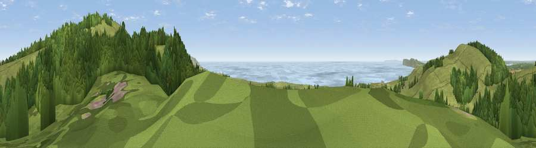

Viewpoint near Brook
#2459 in England · top 22% of its area beats it · near BrookWhere it is
The exact computed spot (SZ 39800 84512). Click the marker for map links.
The view, rendered

A 360° render of this exact spot computed from the terrain model, tree cover and land cover — summer colours, afternoon light, calibrated against photographs of famous viewpoints. Real trees, hedges and buildings will differ in detail.
The panorama
Grey silhouette: terrain skyline in each direction (720 bearings, Earth curvature and refraction included). Dashed green: skyline with trees (+15 m) and buildings (+8 m) as obstacles. Blue strip: how far the ground is visible on each bearing.
Where the view opens
Wedge length = distance to the farthest visible ground on that bearing (vegetation-aware). Rings at 10, 25 and 50 km.
What fills the view
49% grassland · 34% woodland · 12% water · 4% cropland
Angular shares of the visible panorama (visual magnitude), not map area. Landscape diversity 0.49 (0–1 Shannon).
Key numbers
More beautiful places nearby
The staircase of upgrades: each row has a higher view potential than everything closer. Driving times are estimates from straight-line distance, calibrated against real road routing — check an actual route before setting out.
| Place | Direction | Drive | Score |
|---|---|---|---|
| Viewpoint near Brook | ESE · 1 km | ~2 min | 81.6 |
| Mottistone Down | E · 1 km | ~3 min | 87.2 |
| St Catherines Hill | SE · 12 km | ~22 min | 87.6 |
| Viewpoint near Chale | SE · 13 km | ~23 min | 88.3 |
| Viewpoint near Niton | SE · 13 km | ~24 min | 89.2 |
| Viewpoint near West Bexington | W · 85 km | ~109 min | 89.5 |
| The Knoll | W · 86 km | ~110 min | 91.0 |
50.65893, -1.43830 · source: screening · position refined by local search. Computed location — check access rights before visiting.